k-Day 162｜列禦寇
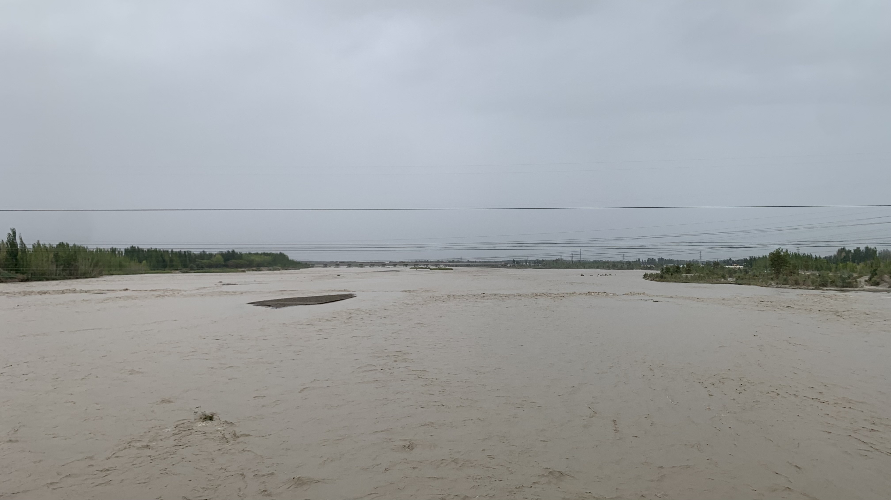
路上經過許多這樣的泥流河，據說水都是山上的雪化了之後留下來的。在我的想像裡沙漠是一滴水都沒有的，塔克拉瑪干的中心大概會是這樣的景象。
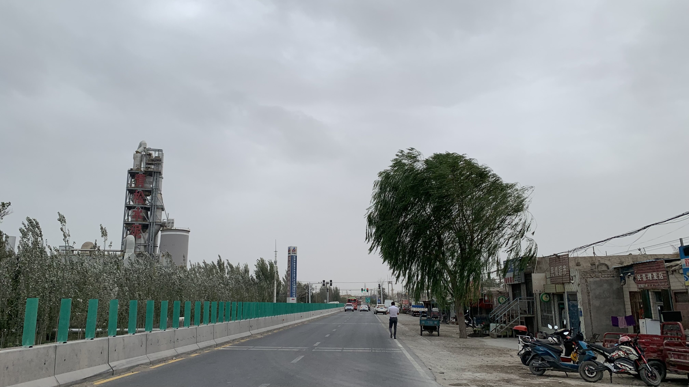
側風頗大，今天應該不會太輕鬆。
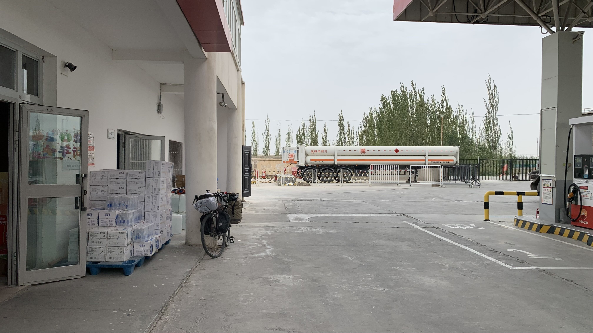
秉持著看到中油就進去休息的堅持，買了一瓶娃哈哈八寶粥蹲在門口開吃。員工跟我說：「裡面有休息室進去休息一下吧！」
總覺得不太好意思，也就買了瓶八寶粥，坐在外面吃就好。
「裡面有休息室，進去休息吧！在這邊警察看了會說我們的。」員工幫車子加完油，看到我還在這，只好明確地這麼說。
抬頭看了一眼攝影機，看來給人添麻煩了。
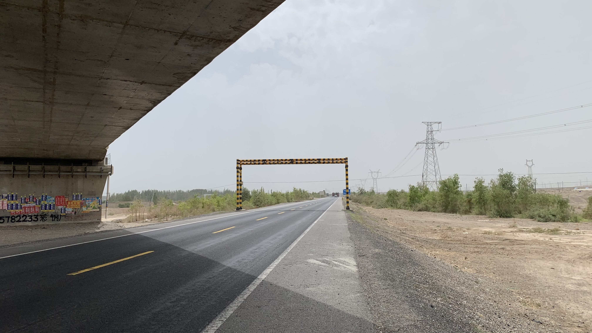
太陽依舊猛烈，像這樣的陰影經過時務必停下來喝兩口水。
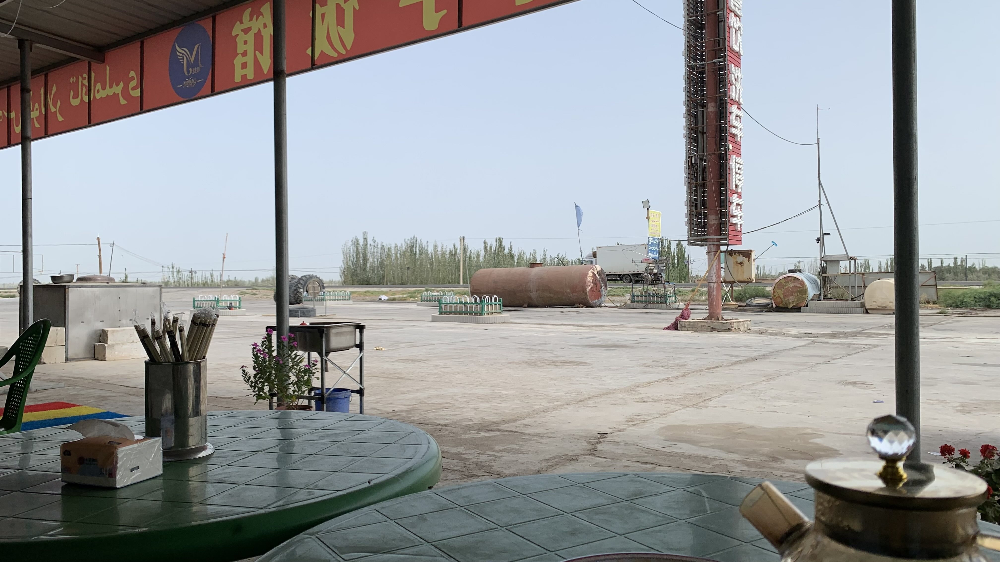
途經一間飯館，買了一瓶冰可樂休息。看了看價格似乎不太貴，又點了一盤肉麵。
坐著發呆，太陽太大，現在出去沒意思。
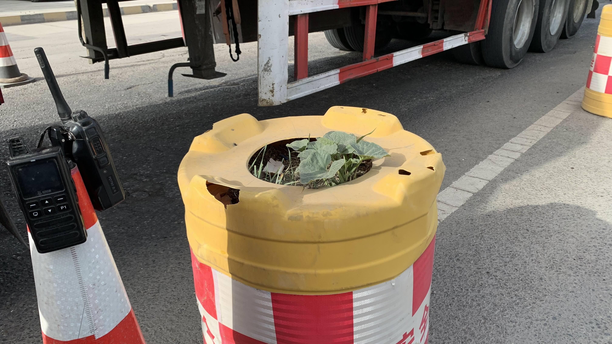
第一次被交警檢查護照。以前都是問些問題，或者看看臺胞證，這次連護照都收去拍照了。看起來年資最大的警察跟我說：「這是工作啊。」我點頭表示理解。另外有兩位年輕警察，一個讓我坐著休息，另一位跑去趕路邊的公雞，回來時拿了三瓶結冰水。
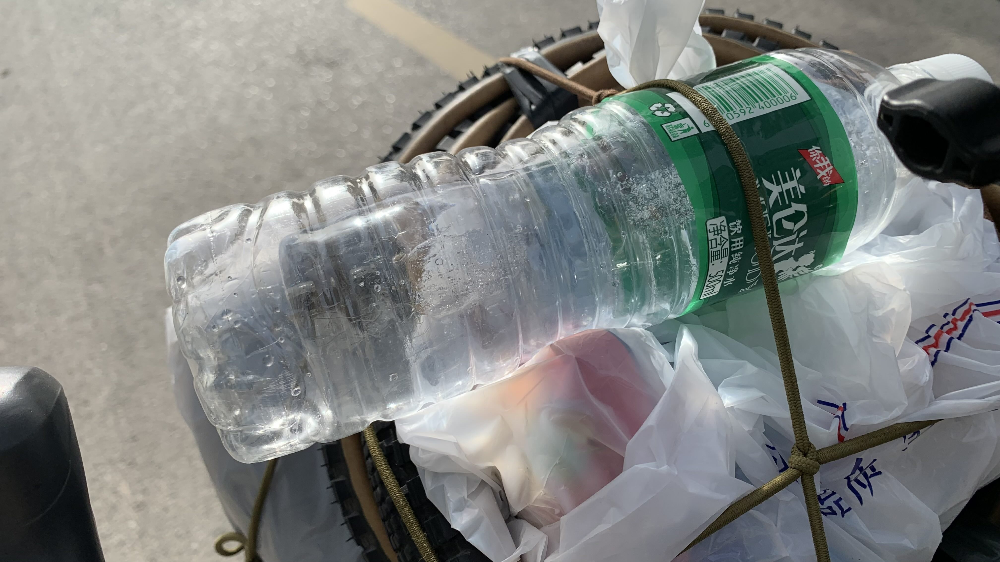
我也有一瓶。
看到上一張照片黃色桶子裡長出的綠色瓜藤，問他們能不能拍照。年輕警察說：「可以！隨便拍！這是我們吃的，吐在這裡。」示範了吐子的動作，欣賞著自己的傑作，又補上一句：「這些長不出來，之後天氣就冷了。」
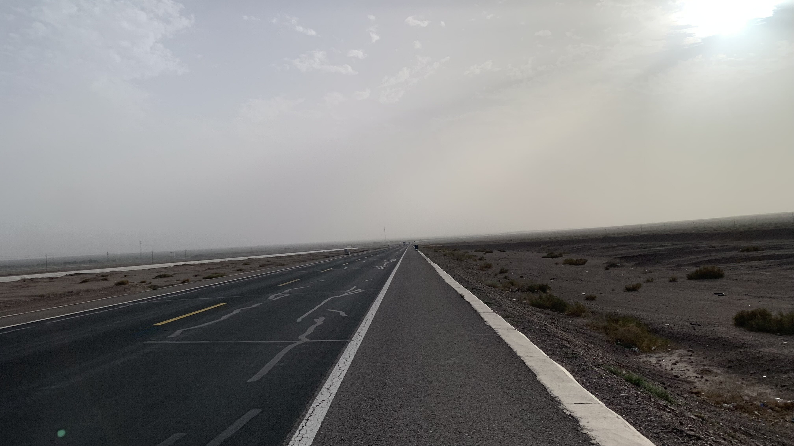
風向轉成側順風，像噴射機一樣往前衝。
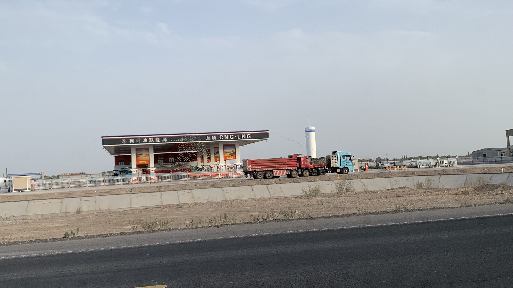
110公里左右來到柯坪加油站，再往前距離太遠，決定轉進去問問能否在後面露營。
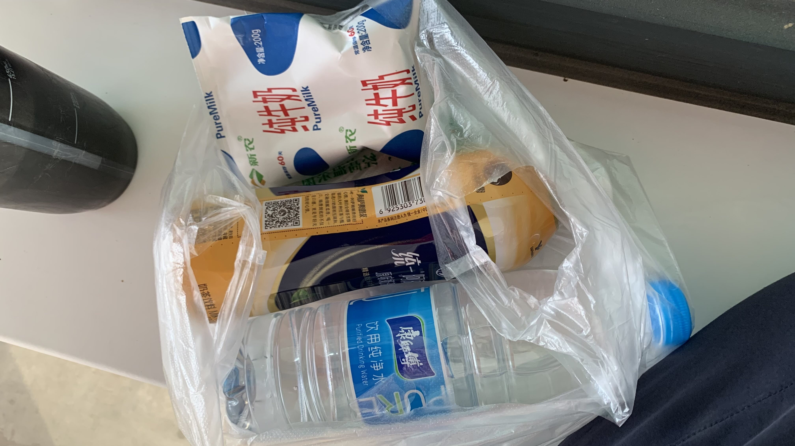
在小賣部買了牛奶和奶茶，店員結帳時主動補了一句：「後面還還有洗澡的地方。」
我都還沒開口呢，真是太感謝了。
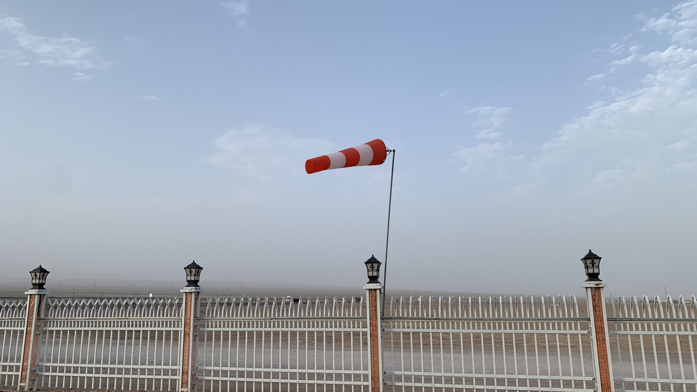
乘著風順風也許可以往前再多騎一段路，但我畢竟不是列禦寇，天色也不早了，還是不要為難自己才好。
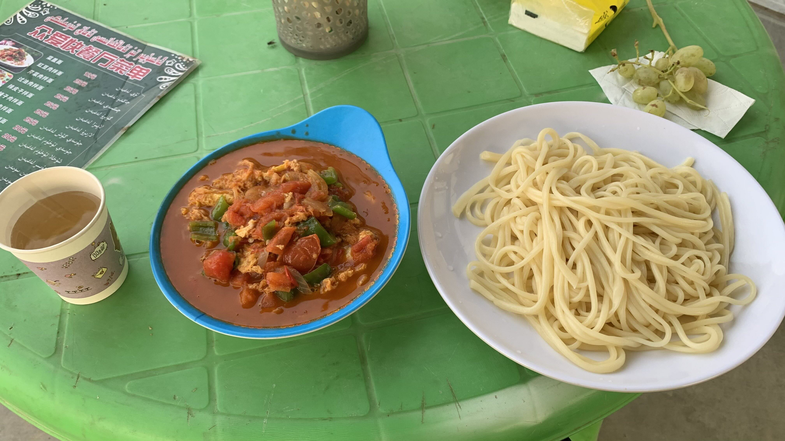
本不想吃晚餐，牽著車子往淋浴間走的時候被餐廳老闆招呼過去，給了我一串葡萄。看看菜單並不貴，就點了一盤番茄雞蛋麵。份量很足，口味偏鹹。雞蛋的口感很特別，應該是蛋液快速倒進熱油後產生的酥脆口感。
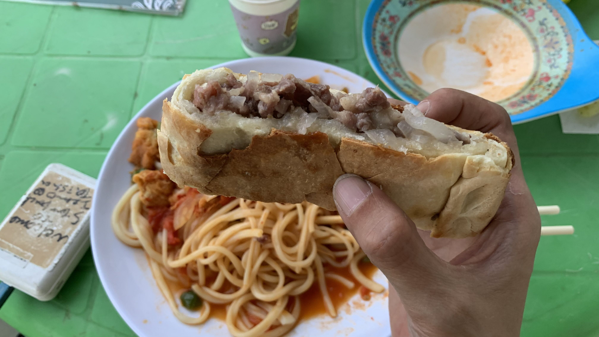
吃飯時老闆的親戚還是朋友在旁邊坐了一桌，大家分著一塊大餅。看我坐在旁邊，也切了一塊給我。餅皮很香脆，肉和洋蔥同樣是偏鹹的口味，很有飽足感。
吃完肉餅，看著盤裡還剩下一大半的面，雖然浪費卻再也吃不下了。旅行出發後應該是第二次剩下食物，第一次是在蒙古吃到的乾巴巴的麵。
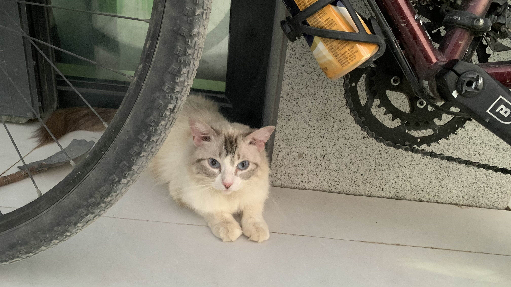
新疆人應該喜歡小貓，好幾間加油站、民宿和餐廳都養著貓，全都不怕人。
在餐廳旁的角落搭起帳篷，內帳拉鏈開了小口，似乎飛進一隻蚊子。晚上睡得不太好。肚子好飽，自從到南疆後好像經常被投餵水糧。
今日花費：早餐 27、八寶粥＋飲料 7.5、可樂 3、肉麵 18、飲料 5、奶茶＋牛奶＋水 8、番茄雞蛋麵 20 元